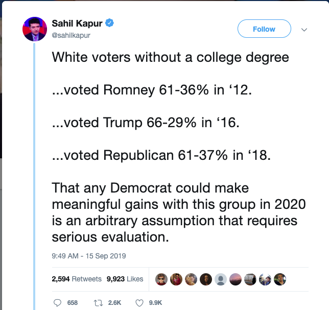

Democratic strategists are split on how to address “White Working Class” (WWC) voters (briefly, white voters without a 4-year college degree. For more details, see this paper): convince them or ignore them? We think they’re both half-right. WWC voters are too conservative to convince and too large to ignore. We think the key is finding overlaps between the issues progressives and WWC voters care about, thus convincing some WWC voters while also rallying the progressive base.
_
This tweet generated a fair amount of discussion! Let’s focus on “meaningful gains.” WWC voters are more likely to vote for Republicans and that will almost certainly continue be true in 2020. But there are a lot of WWC voters! So the difference between the 37% loss in 2016 and the 24% loss in 2018 represents a lot of votes. For instance, WWC voters make up about 60% of the electorate in Wisconsin (ref?). If there had been a 13% swing to Clinton instead of Trump in 2016, Wisconsin would have gone blue. Michigan (53% WWC) and Pennsylvania (55% WWC) are also states where a 13% shift in the 2016 WWC vote would have flipped them blue. But those states were very very close! Even a 2% preference swing in the WWC vote in each state would have flipped them all blue.
Where does this leave us? On the one hand, the WWC is a large (though shrinking) group and even small swings in their likelihood of voting for Democrats can make a difference, particularly in WWC-heavy mid-western battleground states. But the number of votes required, using 2016 as an example, is not nearly large enough to justify centering a campaign on winning WWC votes. To make that point even clearer, let’s ask what change in turnout among the rest of the state would make the same difference. In all three states, it would require less than a 3% turnout boost to bridge the 2016 gap. And these are all states that saw, e.g., drops in turnout from 2012 to 2016 of >5% among non-white voters.
This is summarized in the table below (votes in thousands):
| State | D Votes | R Votes | Total | WWC Pop | WWC D Pref | Non-WWC D Pref | Pref Swing | Turnout Boost |
|---|---|---|---|---|---|---|---|---|
| PA | 2926 | 2971 | 6167 | 55% | 29% | 70% | 1.3% | 2.2% |
| MI | 2269 | 2280 | 4799 | 53% | 29% | 68% | 0.4% | 0.6% |
| WI | 1383 | 1405 | 2953 | 60% | 29% | 74% | 1.2% | 2.8% |
NB: The turnout swing % assumes a turnout of 50% among Non-WWC voters in all 3 states.
First, it’s important to re-iterate how close the mid-west battleground states were in 2016, and how difficult it would be for a Republican candidate to win them with numbers anything like what we saw in 2018. So Democrats may be justified in not making any special appeal to WWC voters. However, as progressives often point out, many progressive policies are good for almost everyone, including the WWC. So we think the approach should be two-fold:
Do what we do everywhere else: work hard at registration and turnout among everyone but particularly the Democratic base.
Identify which parts of the WWC can be convinced, either by their willingness to embrace parts of the progressive agenda or their disgust with Trump and his enablers. And focus the approach in those states and districts accordingly.
In other words, try to rally the voters who are reliable Democratic supporters while also minimizing losses among the WWC.
Give your time or money to organizations that work on registration and turnout, especially among groups that tend to support Democrats.
Some of these states have voter ID laws. Organizations that do work to mitigate the effects of these laws on turnout are also important.
We tried to find local organizations working specifically in these states. Please email us if you know of local organizations doing this work and we’ll update this post!
Want to read more from Blue Ripple? Visit our website, sign up for email updates, and follow us on Twitter and FaceBook. Folks interested in our data and modeling efforts should also check out our Github page.